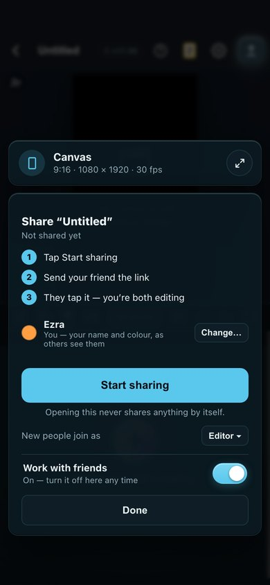
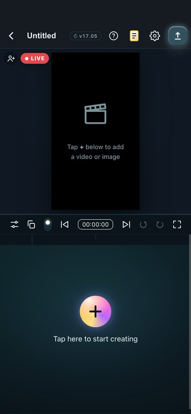
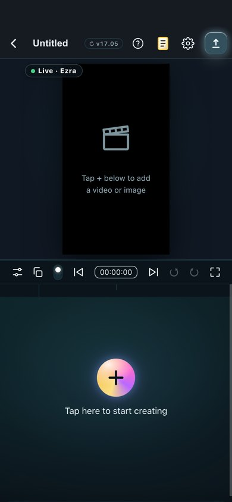
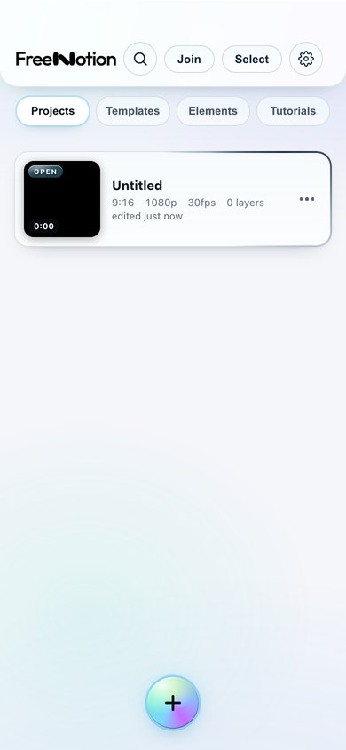

You: “make sure it's all there and it's all working … and actually makes sense for someone who doesn't know how to use it”
Six agents walked it on a phone. The hard part works — two phones really do connect and edit together. What's broken is everything around it. Batch 1 is being built now (no looks change): the code swap no longer dies after 20 seconds, “off” really turns off every project, Stop sharing is on Home's ⋯, nothing turns itself back on when the app opens, and it says when someone leaves.
The rest changes how things look, so here are the pictures and the questions. Reply “do recommended”, or pick per line.
The recommended looks

1. How it works + a switch that stays

2. You, sharing: ● LIVE on the video

3. Your friend: ● Live · Ezra

4. A “Join” button on Home
Doors and switches you can see
Where the off switch lives once it's on.A — a “Work with friends” switch at the bottom of the Friends block, always (picture 1). B — only in the block's settings. C — only in Settings, moved up.
The share door on the video.A — the round person+ on the video's corner, always there, even before it's turned on (it opens the switch). B — somewhere else.
OK to show that one door while the feature is off?.Yes — it only opens the explanation and switch; nothing connects.
The Join door on Home.A — a “Join” word button next to Select (picture 4). B — an icon. C — in the + menu.
How the video shows you're live.A — a red ● LIVE pill for you, “● Live · Ezra” for your friend (pictures 2 and 3). B — a coloured ring. C — nothing on the video.
Settings.A — Work with friends moves up with its own heading; the seven test reports fold into one row at the bottom. B — leave it at the bottom.
Friend opening your link in iPhone Safari.A — “Join now” first; “add to Home Screen” is an optional step after. B — keep app-first.
Where “How it works” sits.A — three numbered lines at the top of the Friends block (picture 1). B — a one-time explainer card.
With a layer selected.A — the person chip on the video stays visible. B — put Friends in the layer ⋯ menu instead.
Which projects are shared
Reopening a project you shared before.A — it asks “Carry on sharing?” [Share again] [Not now]; nothing goes live without you choosing. B — resume by itself with a toast. C — never resume.
A paused shared project on Home.A — a grey “SHARED · paused” badge. B — nothing on the card, only Stop sharing in its ⋯.
The LIVE badge on Home.A — stacked above the length, off the time pill. B — the thumbnail's top-right.
Opening another project while a friend who joined by code is in.A — ask first (they'd need a new code). B — just go, toast after.
Plain words, one name
The feature's one name.A — “Work with friends” for the feature, “Share live” for the button, “Join” for your friend. B — keep “Live collaboration”.
The long code's name (the fallback when the link won't go).A — “swap code”. B — “backup code”. C — “long code”.
Follow's name.A — “Watch along”. B — keep “Follow”.
The privacy paragraph.A — one plain sentence, with “What gets sent? ›” opening the full list. B — keep the full paragraph showing.
Comments you can find
Comments on the phone.A — a speech-bubble button next to the person chip, with a count, only when there are comments or you're live. B — a row in the Friends block.
A Viewer asking to edit.A — an “Ask” button on their banner that pops a card on your phone. B — just words.
One thing only your phone can test: the invite link itself (this Mac can't reach the online helpers the link uses). Once batches 1 and 2 are on your phone, I'll ask you to send a link to a second phone once.